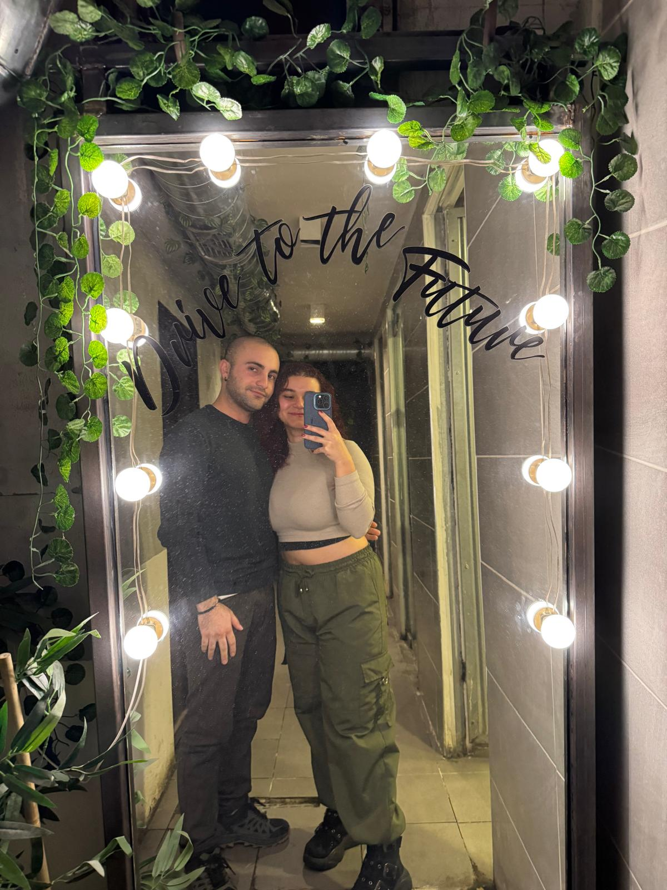

/**
*Yeliz ve Can İçin Bir Sayfa
*/
SELAM GÜZELİM !
Sanırım her sabah mutlu uyanman için bir yol buldum :]
// Bu sayfaya istediğin zaman girip ikimizin birlikte geçirdiği değerli zamanı öğrenebilirsin.
İşte bu alan ikimizin istediğin yerden ulaşabilirsin ;
// Burayı beraber biriktirdiğimiz senin kaydettiğin anılarla doldururuz.
Yelizim için küçük bir hediye.
Çünkü Yeliz'im herzaman mutlu olmalı.
Eğer istersen aşağıdaki kalbe dokunarak güzel bir anımıza gidebilirsin.
*Yeliz ve Can İçin Bir Sayfa
*/
SELAM GÜZELİM !
Sanırım her sabah mutlu uyanman için bir yol buldum :]
// Bu sayfaya istediğin zaman girip ikimizin birlikte geçirdiği değerli zamanı öğrenebilirsin.
İşte bu alan ikimizin istediğin yerden ulaşabilirsin ;
// Burayı beraber biriktirdiğimiz senin kaydettiğin anılarla doldururuz.
Yelizim için küçük bir hediye.
Çünkü Yeliz'im herzaman mutlu olmalı.
Eğer istersen aşağıdaki kalbe dokunarak güzel bir anımıza gidebilirsin.

:]
Her Gün İçin Yüzlerce Öpücük
- Ayıcıktan